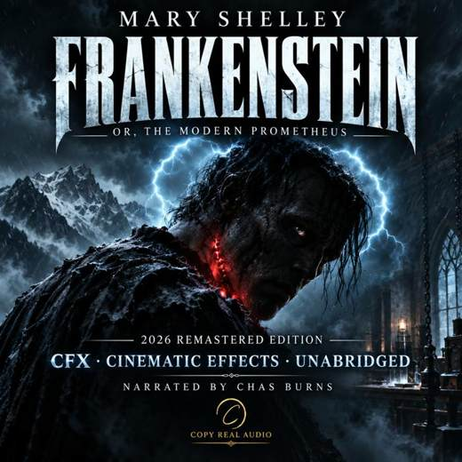
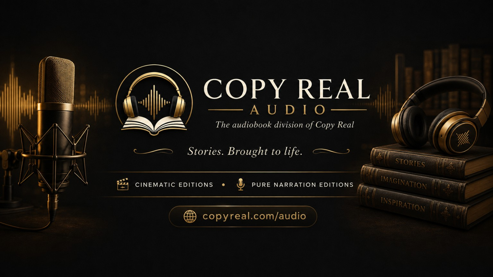
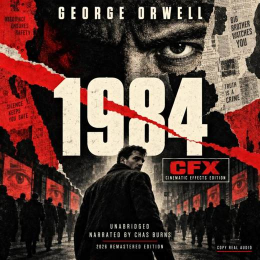
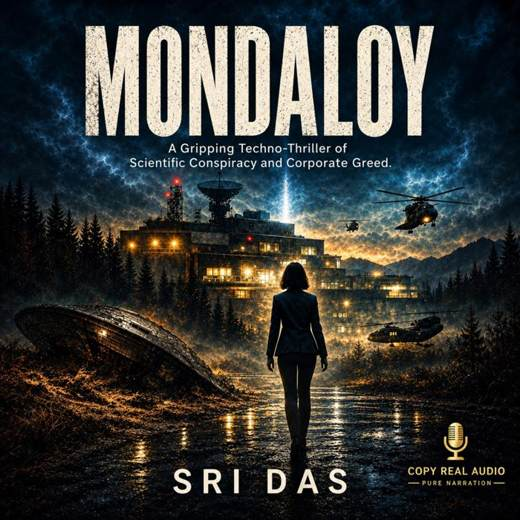
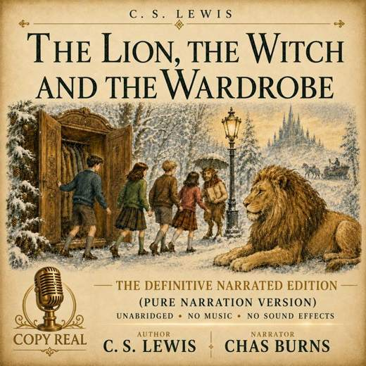
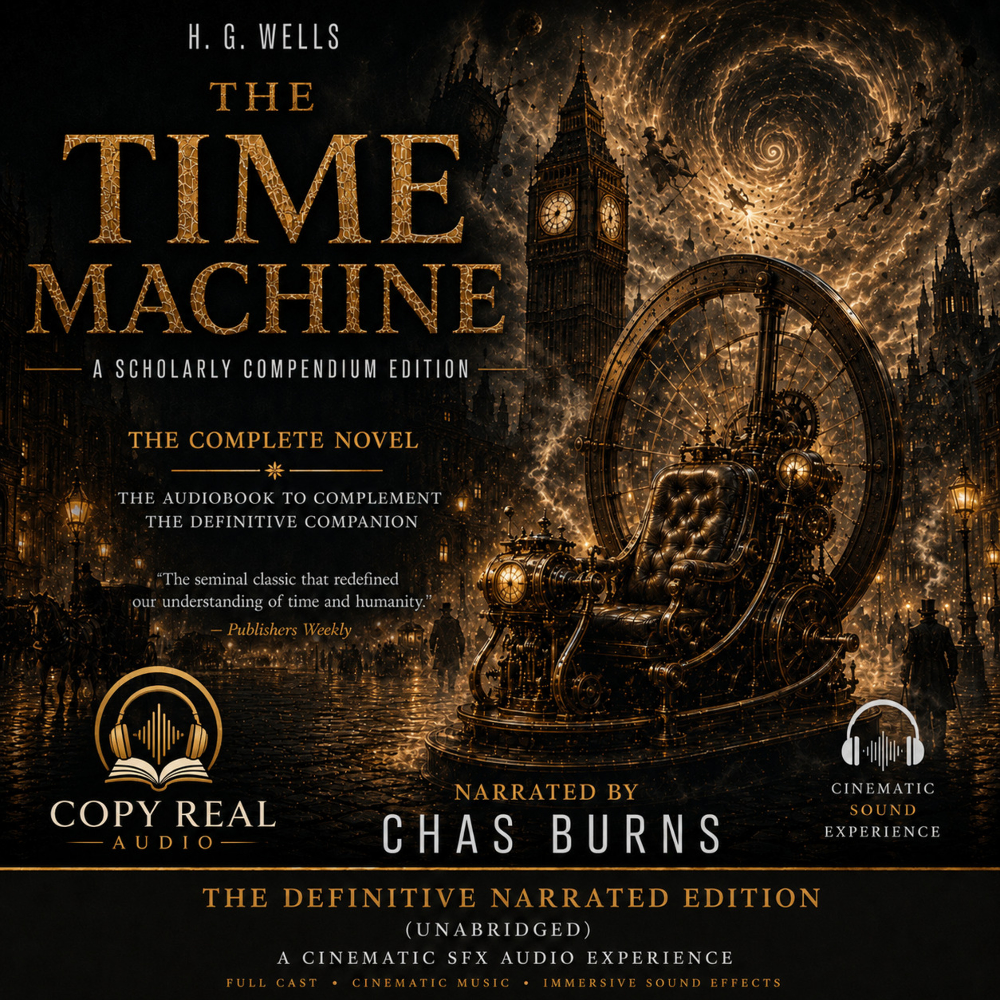
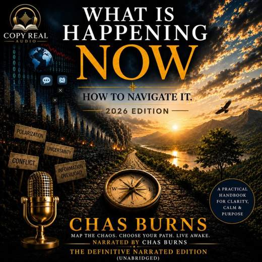
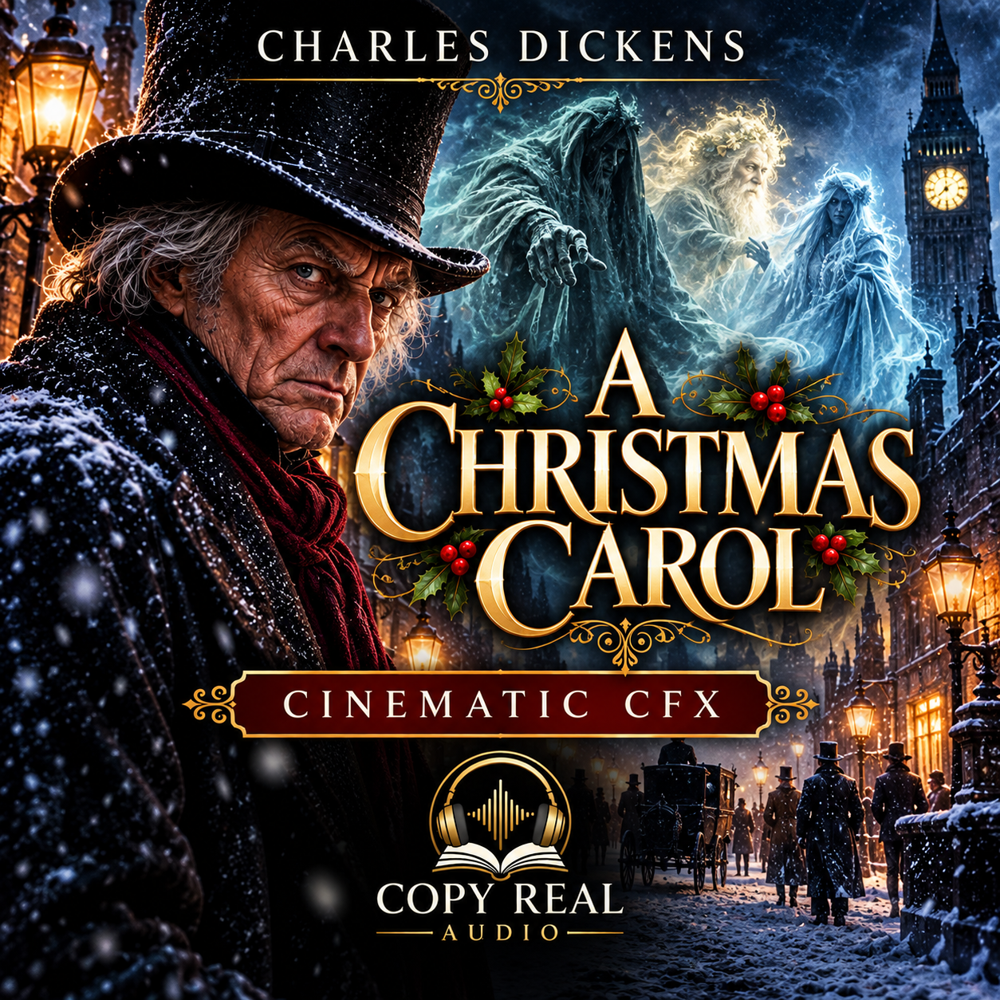

Frankenstein
2026 remastered · Cinematic Edition

Pure Narration and Cinematic Editions, presented title by title with edition-specific and territory-aware availability.
The complete text and the narrator. No added music and no sound effects. The voice and the writing remain the entire production.
The same complete narration presented as a distinct edition with designed atmosphere and cinematic sound effects. Current Copy Real CFX policy: no added music.
Choose a title, then open its Spotify or Audible listing. Where an exact edition is still unconfirmed, the button opens a title search.







“Edition” opens the verified listing. “Search” opens a retailer search when a matching edition has not yet been confirmed there. Availability and purchase options depend on your country.
Copy Real Audio is the imprint. Retailers are destinations, not the architecture of the catalogue.
Spotify, Apple Books, Google, Storytel, library platforms and other destinations can be attached title-by-title and replaced without rebuilding the page.
Each edition can carry its own country availability statement. No global availability is implied simply because the title appears here.
Listener companions, maps, illustrations and other edition-specific material can be attached where relevant.